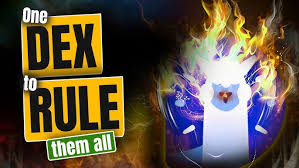

Swap DefiLlama : My Accidental Journey into the Wild West of DeFi Aggregation
Remember that time I tried to bake a cake using only instructions gleaned from a dozen different recipe blogs? It was…a disaster. Too much flour, not enough sugar, a suspicious green tinge thanks to a rogue ingredient from a particularly enthusiastic food blogger. That's kind of how I felt navigating the DeFi landscape before discovering DefiLlama.
For the uninitiated (and honestly, even for the initiated sometimes), the decentralized finance world can feel like that chaotic kitchen: a thrilling explosion of potential, but also a minefield of confusing protocols, hidden fees, and wildly varying levels of user-friendliness. You’re hopping between different platforms, desperately trying to compare APRs (annual percentage rates), wrestling with clunky interfaces, and praying you don't accidentally send your hard-earned crypto to a black hole.
That's where DefiLlama comes in, at least that’s how it felt to me. It's not a perfect solution – no one-stop shop for DeFi truly is – but it's a damn sight better than that recipe-blog cake fiasco. Think of it as the sensible, slightly-chaotic-but-mostly-helpful aunt who guides you through the crazy world of DeFi. She doesn't bake the cake for you, but she points you towards reliable ingredients and warns you about the suspiciously green ones.
DefiLlama’s primary function, as many know, is aggregating data from various DeFi protocols. It presents a consolidated view of total value locked (TVL), providing a crucial snapshot of the health and activity of different platforms. This is hugely beneficial, letting users quickly compare platforms before diving in. It’s like having a single dashboard showing the vital signs of dozens of DeFi patients – crucial information before you choose which one to invest your time (and money) in.
But I’ve come to appreciate DefiLlama's role in something bigger: the evolution of DeFi aggregation. It’s not just about presenting numbers; it’s about building a foundation for a more user-friendly, transparent, and efficient DeFi ecosystem. The fact that it even exists points towards a growing need for clearer, more accessible information in a space notorious for its opacity.
Now, I'm not going to pretend DefiLlama is without its flaws. The data can sometimes lag, the interface could be more intuitive (though they're constantly improving), and it doesn't offer direct interaction with the protocols themselves. It's a aggregator, not a trading platform. Yet, isn’t it telling that even its imperfections reveal the nascent nature of the whole DeFi aggregation game?
Think about it – we’re still in the early days. The very need for a site like DefiLlama underscores the fragmented state of DeFi. But its existence also heralds a future where this fragmentation is lessened, where navigating the DeFi landscape is less like baking a chaotic cake and more like ordering a perfectly crafted dessert from a reliable bakery.
So, here we are. My journey with DefiLlama began with a frustrated sigh and a sense of information overload. Now, it’s evolved into a sense of cautious optimism. I still approach the world of DeFi with a healthy dose of skepticism and a dash of fear, but DefiLlama has become a trusted companion in that journey, a helpful hand guiding me through the initially overwhelming complexity. And that, my friends, is more valuable than any perfectly baked cake.

DefiLlama's Swap: Is This the Future of Financial Lego?
Remember trying to build that ridiculously complex Lego castle as a kid? Instructions? Pfft. More like a chaotic pile of bricks and a vague, inspiring picture. You spent hours figuring out which piece went where, constantly re-evaluating your strategy, occasionally weeping over a misplaced minifigure. That, my friends, is kind of how I felt navigating the DeFi landscape before DefiLlama's Swap aggregator came along.
DeFi, for the uninitiated, is a wild west. A dazzling, decentralized frontier of lending, borrowing, swapping, and yield farming. It's also, let's be honest, a minefield of different platforms, each with its own quirks, fees, and user interfaces. Finding the best deal, the most efficient route, felt like searching for the Holy Grail – blindfolded, in a blizzard.
Then came DefiLlama's Swap aggregator. And suddenly, building that Lego castle feels… manageable. Maybe even fun.
At its core, DefiLlama is already a treasure trove of DeFi data. It’s the go-to place for checking TVL (Total Value Locked), comparing protocols, and generally getting a sense of the overall market health. But their recent foray into swap aggregation is a game-changer. It’s not just about providing another tool; it's about refining the entire experience of using decentralized finance.
Before DefiLlama's Swap, my process was agonizing. I’d bounce between Uniswap, Curve, Balancer – each requiring a separate transaction, a separate gas fee (ouch!), and a separate mental calculation to figure out if I was actually getting a good deal. It felt incredibly inefficient, almost archaic compared to the streamlined experience of centralized exchanges.
DefiLlama, however, is cleverly aggregating liquidity across multiple decentralized exchanges (DEXs). You input your desired swap, and poof – it finds the best route across the available DEXs, optimizing for the lowest price and fees. This isn't just convenience; it's a significant step towards making DeFi more accessible to the average user. No more frantic cross-referencing – just a clear, efficient process.
Now, I'm not saying it's perfect. There are still kinks to work out. Sometimes, the displayed price fluctuates slightly between the confirmation and execution of the swap. It's a small frustration, a reminder that we're still in the early stages of DeFi development. But it’s a minor hiccup compared to the pre-DefiLlama chaos.
And here's where I get a bit philosophical. DefiLlama's Swap isn't just an aggregator; it’s a testament to the power of open-source collaboration and the building-block nature of DeFi itself. Each DEX, like a carefully crafted Lego brick, contributes to a larger, more sophisticated structure. DefiLlama acts as the architect, cleverly assembling these bricks into something truly functional and elegant.
This isn't just about comparing prices, it's about building a more user-friendly ecosystem. It’s about making DeFi less intimidating, more inclusive, and ultimately, more powerful. Is it the final piece of the puzzle? Absolutely not. But it’s a giant leap forward, a testament to innovation, and a sign that the DeFi Lego castle is finally starting to take shape. And that, my friends, is something worth celebrating. Now, if you'll excuse me, I have a virtual Lego castle (and some DeFi swaps) to build.
DefiLlama's Swap: It's Not Just Magic, It's (Mostly) Clever Engineering
Remember that time I tried to build a Lego castle? It started grand, a majestic fortress fit for a king… then it collapsed spectacularly because I hadn’t properly secured the base. DefiLlama’s swap functionality feels a bit like that – ambitious, impressive, but definitely not without its engineering challenges. And unlike my Lego castle, it's actually standing. So how did they do it? The answer, as you might guess, lies in its clever multi-protocol design.
At its core, DefiLlama’s swap feature isn't a single, monolithic system. Think of it less like a Swiss Army knife with one blade doing everything, and more like a toolbox – filled with different specialized tools for various jobs. This is crucial because the decentralized finance (DeFi) world isn't a neatly organized landscape; it’s a sprawling, chaotic, beautiful mess of different protocols, each with its quirks and idiosyncrasies. You've got Uniswap, SushiSwap, PancakeSwap, and a whole host of others, all operating on their own blockchains and using different mechanisms. Trying to create a single solution to bridge them all would be like trying to write a single program that runs on every operating system ever created – a monumental task.
So, DefiLlama takes a different approach. Instead of trying to create a universal swap, it acts as a clever aggregator. It connects to various decentralized exchanges (DEXs) via their APIs. It's like having a really efficient travel agent who can book you flights on any airline, regardless of whether they're a low-cost carrier or a legacy giant. This allows users to compare prices across various DEXs and choose the best option, maximizing their returns and minimizing slippage – that nasty feeling when your trade executes at a worse price than you expected.
But here's where things get interesting (and maybe slightly terrifying if you're a programmer). Each DEX has its own unique API, its own data structure, its own… personality. Integrating them all smoothly requires a team with a deep understanding of different blockchain technologies, a hefty dose of patience, and probably a strong espresso addiction. There are bound to be compatibility issues, unexpected errors, and the occasional late-night debugging session fueled by caffeine and desperation. I imagine the codebase is a patchwork quilt – beautifully chaotic, but meticulously stitched together.
Now, I’m not a blockchain engineer, so I can't claim to fully grasp the intricacies of their multi-protocol solution. There are probably layers of abstraction, clever algorithms, and carefully crafted error handling that I haven't even begun to consider. But the beauty of it lies in its simplicity from a user perspective. You click a button, and the magic happens – or at least, it's supposed to. There are occasional hiccups, of course. Sometimes a DEX might be down, or an API might return an unexpected error. That's the inherent risk of dealing with decentralized systems, a lesson I'm slowly learning the hard way.
Reflecting on this journey of exploring DefiLlama's swap, I'm struck by the sheer engineering prowess involved. It’s a testament to the power of modularity and adaptability, a quality so often needed in the fast-paced, ever-changing world of DeFi. It’s not perfect, no system ever is, but it's a powerful illustration of how clever design can navigate the complexities of a decentralized ecosystem. And that, my friends, is something worth celebrating. Now, if you'll excuse me, I think my Lego castle is calling for a rebuild... perhaps with a sturdier foundation this time.
Swap DefiLlama : More Than Just Numbers – A Journey Through Innovation
Remember that time I tried to bake a cake using only instructions from a cryptic, ancient scroll? Total disaster. Ingredients were questionable, the process was maddeningly vague, and the end result? Let’s just say it involved a lot of scraping and a very understanding dog. That’s kind of how navigating the DeFi landscape felt before DefiLlama’s swap feature arrived. A bewildering mix of protocols, fees, and hidden complexities. Now, that’s not to say it’s easy, but DefiLlama's innovation has definitely made it less of a culinary catastrophe and more like...a slightly challenging but ultimately rewarding bake-off.
DefiLlama, for the uninitiated (and bless your heart if you are), is a crucial aggregator in the decentralized finance space. Think of it as the Yelp of DeFi, but way more powerful and less prone to fake five-star reviews (mostly). And their recent swap feature? That’s been a game-changer.
One of the biggest hurdles in the world of DeFi is finding the best swap. Seriously, it’s a rabbit hole. You've got Uniswap, SushiSwap, Curve, Balancer… the list goes on, each with its own quirks, fees, and liquidity pools. It's like choosing a restaurant based solely on a cryptic menu written in Klingon. Before DefiLlama’s swap, I spent hours comparing rates, analyzing fees, and mentally calculating slippage (still not entirely sure I've mastered that). Now, with a few clicks, I can see the best rates across various DEXs and execute the swap directly through DefiLlama. Talk about a time saver! This, in itself, is a massive milestone – democratizing access to optimal swap rates for users who aren't DeFi wizards.
But it’s not just about convenience. The underlying innovation here is the seamless aggregation of data across different chains and protocols. That's the really impressive bit. I mean, getting all those different blockchains to talk to each other nicely? That’s like getting a group of cats to all agree on which sunbeam to nap in. A monumental task! It's a testament to DefiLlama's engineering prowess, and it speaks volumes about their commitment to user experience.
And there’s the added security layer they’ve carefully built. Anyone who’s been involved in the DeFi space knows security is paramount. One wrong move can…well, let’s just say it’s not pretty. So seeing DefiLlama's meticulous approach to this aspect is hugely reassuring. It gives me a sense of comfort knowing they prioritize safety alongside innovation, which, sadly, isn’t always the case in this wild west of finance.
Of course, there’s always room for improvement. The interface could be even more intuitive, perhaps with better visualization tools for complex swaps. Maybe more educational resources for those new to the scene? (I’m still occasionally baffled by some of the jargon). But these are minor gripes considering the transformative leap they've already achieved.
Writing this has actually made me reflect. It's been a journey, from initial confusion and frustration when navigating the DeFi landscape, to the newfound ease and clarity that DefiLlama’s swap feature provides. It's a reminder that innovation isn't just about groundbreaking technology, it's about simplifying complex things and making them accessible to everyone. And in the often overwhelming world of DeFi, that’s a truly remarkable achievement. So thank you, DefiLlama, for turning my DeFi baking experience from a culinary catastrophe into something a bit more… edible. Now, if you'll excuse me, I'm off to try that cake recipe again. This time, with a better recipe. And hopefully, a less understanding dog.
.jpeg)
DefiLlama and the Wild West of DeFi 2.0: My Accidental Obsession
Remember that feeling, that giddy, slightly terrified thrill of the first time you rode a rollercoaster? That's kind of how I feel about DeFi 2.0, and DefiLlama is my shaky-handed grip on the safety bar.
I'm not a crypto whale, not by a long shot. I'm just a curious observer, someone who's fascinated by the sheer audacity of decentralized finance. And let's be honest, slightly bewildered. It's a constantly shifting landscape, a wild west where innovation sprints ahead of regulation, leaving us all slightly breathless and wondering if we should be wearing helmets.
That’s where DefiLlama comes in. For those unfamiliar, it's essentially a comprehensive dashboard tracking pretty much everything happening in the DeFi space. Think of it as the indispensable guidebook for navigating this chaotic, exciting world – a detailed map of a territory that's constantly being redrawn.
Initially, I treated DefiLlama as just a tool. I’d pop over, check TVL (Total Value Locked), maybe glance at the latest yield farming craze, and then move on. But the more I used it, the more I realized its importance. It's not just about numbers; it's about context. It allows you to see the bigger picture, to spot trends, and, most importantly, to understand the interconnectedness of different protocols.
DefiLlama helps highlight the key themes of DeFi 2.0 – the shift from simple yield farming to more complex strategies, the rise of real-world asset tokenization, the growing importance of decentralized autonomous organizations (DAOs). It’s like watching a complex ecosystem evolve in real-time, and DefiLlama provides the microscope.
But it’s not perfect, is it? There’s always the nagging feeling that you're missing something – some crucial piece of the puzzle. The sheer volume of data can be overwhelming, and sometimes I find myself staring at charts, completely lost in a sea of numbers. It's almost ironic; a tool designed to bring clarity can sometimes feel like it adds to the confusion!
And the whole “trust, but verify” aspect is paramount. While DefiLlama strives for accuracy, it relies on data provided by various sources, and those sources aren't always perfect. There’s a level of faith required, a leap of trust into the digital ether. Sounds familiar, doesn’t it? Isn’t that the nature of DeFi itself?
So, what have I learned from my journey observing DeFi 2.0 through the lens of DefiLlama? It's not just about finding the highest APY (Annual Percentage Yield), though that’s tempting. It's about understanding the underlying technology, the risks involved, and the potential for both incredible gains and catastrophic losses. It’s about finding a balance between ambition and caution, excitement and apprehension.
This isn't a tidy conclusion, more like a half-formed thought. My rollercoaster ride with DeFi 2.0, guided by DefiLlama, continues. Some days, the view is breathtaking; other days, my stomach lurches. But that's the magic, the constant learning, the unpredictable nature of it all – and for that, I wouldn't trade it. The journey, as they say, is the destination, even if that destination looks suspiciously like a DeFi protocol with an oddly high APY... and a slightly worrying lack of transparency. Time to check DefiLlama again, I guess.
Lost in DeFi-land: My Accidental Journey with Swap's Automation and Smart Routing
Remember that scene in "Office Space" where they're watching that stapler get magically transported? That's kinda how I felt when I first started messing around with DefiLlama's swap aggregator and its smart routing. I mean, I’d heard whispers, seen the promises of optimized swaps and lower fees, but actually seeing it happen…well, it felt like magic. Or at least, really sophisticated spreadsheet wizardry.
I’ll admit, my initial foray into decentralized finance was… chaotic. I was like a kid in a candy store, bouncing between different exchanges, constantly comparing gas fees and slippage, feeling like I was playing a high-stakes game of financial whack-a-mole. It was exhausting. I felt like I was spending more time calculating fees than actually making any meaningful trades.
Then, DefiLlama’s swap aggregator entered my life, a shimmering beacon of hope in the often-murky waters of DeFi. I figured, "what the heck," and decided to give it a go. The interface was surprisingly user-friendly (a huge plus for a crypto noob like myself), and the promise of automated, smart routing instantly appealed to my inherently lazy nature.
The “smart” part, as it turns out, is no mere marketing gimmick. The aggregator compares prices across various decentralized exchanges (DEXs), finding the best possible route for your swap. It’s like having a tiny, hyper-efficient financial ninja working tirelessly on your behalf, hunting down the most cost-effective path through the DeFi jungle. And, yes, it's actually faster and cheaper than manually hunting for the best deals, at least in my experience. I'm talking savings that are noticeable, not just theoretical.
But here’s where things get a little… interesting. Automation is amazing, right? But there's a part of me, a stubborn little voice in the back of my head, that wonders if I'm losing something by relinquishing control. Is it a bit like handing over the steering wheel of my financial life to a sophisticated algorithm? A little unnerving, maybe? I’m not sure.
Part of the charm – the terrifying, exhilarating charm – of DeFi was the hands-on element, the constant vigilance required. Now, it feels like I’m outsourcing a crucial part of my strategy. I’m trading some adrenaline for efficiency. A fair exchange? I'm still pondering that.
It's a fascinating paradox, isn’t it? We embrace automation to streamline our lives, to optimize efficiency, yet there's a part of us that cherishes the granular control, the feeling of being directly in the driver's seat. Maybe it's a fundamental human need – the desire to exert agency, to be in charge of our own destinies, even (especially?) in the often-chaotic realm of decentralized finance.
So, where does that leave me? Well, I'm still using DefiLlama's swap aggregator. The convenience and cost savings are undeniably appealing. But I've also become more aware of the subtle trade-offs involved in embracing automation in any field, especially one as volatile as DeFi. My journey hasn't ended with a neatly tied bow; it’s more of a continuous exploration, a balancing act between efficiency and control. And that, I suppose, is the true beauty of it all. It’s not just about the technology; it’s about the human experience of navigating this ever-evolving landscape. And that experience? That’s a story still being written.
From Yahoo Finance to DeFiLlama: My Accidental Journey into Aggregator-land
Okay, confession time. I used to think financial aggregators were about as exciting as watching paint dry. Yahoo Finance? Bloomberg? Snoozefest. My financial life felt like navigating a dense fog – a murky world of spreadsheets and cryptic jargon. Then DeFi happened. And suddenly, I needed a way to make sense of this wild, wild west of decentralized finance. That's when DefiLlama sauntered into my life, and completely upended my preconceived notions.
Initially, I was clinging to the familiar. I’d glance at CoinMarketCap, the old reliable, much like I still check the weather on AccuWeather even though five other apps tell me the same thing. It was comfortable, predictable...boring. These legacy aggregators are, to put it mildly, functional. They provide data – usually with a hefty dose of delay – and that’s about it. They're the beige walls of the financial world. Solid, but utterly lacking in personality.
Enter DefiLlama, a vibrant splash of color on those beige walls. It’s like comparing a dusty encyclopedia to a hyper-interactive Wikipedia – constantly updated, brimming with community contributions, and frankly, a lot more fun. I mean, the sheer volume of data they manage is staggering. Trying to wrap my head around the TVL (Total Value Locked) across all these different chains initially felt like trying to understand quantum physics – but in a good way. There's a tangible sense of community, a feeling of shared exploration that's completely absent from the more established platforms.
Now, let’s not get carried away. DefiLlama isn't perfect. Data accuracy is always a concern in the fast-paced world of DeFi. And sometimes, the sheer abundance of information can be overwhelming, like being dropped into a bustling marketplace with a thousand vendors shouting at you simultaneously. It's certainly not as polished as, say, Bloomberg Terminal (which, let’s be honest, probably costs more than my annual rent).
But that's part of its charm, isn't it? It’s raw, it's energetic, it's constantly evolving. It's a reflection of the DeFi space itself – chaotic, exciting, and full of potential. You get a sense of the pulse of the market in a way you just can't with the more static, legacy aggregators. Think of it this way: legacy platforms are the reliable, slightly-stuffy librarian; DefiLlama is the enthusiastic, slightly-unorganized research assistant who's always buzzing with new discoveries. Both have their place.
So, which one should you use? Well, that depends. If you need a quick, clean overview and aren’t particularly interested in the nitty-gritty details, the legacy aggregators will suffice. But if you're genuinely interested in diving deep into the DeFi ecosystem, if you want to feel the energy and the dynamism of this space, then DefiLlama (and similar platforms) are a must.
This whole exploration has been a fascinating journey for me. It started with a simple need to understand DeFi, and it led me to appreciate the different roles these aggregators play. It highlighted the inherent tension between the established order and the disruptive newcomer. It's a microcosm of the technological revolution playing out around us, and I, for one, am excited to see what the next chapter brings. Maybe one day, we’ll see the best features of both worlds seamlessly integrated – a sleek, user-friendly platform with the depth and real-time updates we crave. Until then, I'll be happily navigating the exciting, if sometimes overwhelming, world of DefiLlama. And maybe, just maybe, I’ll finally understand what "impermanent loss" really means. Wish me luck.
The Accidental DeFi Alchemist: How Swap on DefiLlama Blew My Mind (and Maybe Yours Too)
Remember that feeling when you first discovered Netflix's "Continue Watching" feature? Pure, unadulterated joy. Suddenly, navigating the overwhelming ocean of content felt manageable, even fun. That’s kind of how I feel about DefiLlama's new Swap feature. It’s not just a simple aggregator; it’s a UX revolution for the often-intimidating world of decentralized finance.
I’ll admit, before I stumbled upon Swap, my DeFi journey was…let’s just say patchy. I’d bounce between a dozen different DEXs, each with its own quirks, fees, and user interface that felt like it was designed by a mischievous goblin. Finding the best price? Forget about it. It felt like searching for the Holy Grail, armed with only a rusty spoon.
Then, DefiLlama's Swap happened. It's like someone finally saw my struggle, poured me a stiff drink (metaphorically, of course; I'm saving my actual drinks for celebrating my next DeFi win), and presented me with a single, beautifully streamlined interface. Suddenly, comparing rates across various decentralized exchanges wasn't a herculean task, but a quick, almost effortless glance.
But here’s the thing: I’m not entirely sure why this is such a game-changer. Is it the clean design? The intuitive search? The fact that I can finally stop feeling like a digital Luddite trying to navigate the intricacies of blockchain technology? Probably all of the above. It’s the subtle things, you see. The small details that add up to a genuinely transformative experience. It’s like the difference between eating a bland, tasteless burger and a juicy, perfectly cooked masterpiece. One fills you up, the other nourishes your soul. (Okay, maybe I’m getting a bit carried away with the metaphors, but you get the point).
There’s a certain poetry to it, isn’t there? This quiet revolution happening behind the scenes, subtly reshaping how we interact with DeFi. It’s almost…dare I say it…elegant. And this elegance isn't just skin deep. The impact goes beyond the ease of use; it democratizes access. It lowers the barrier to entry for everyday users who might otherwise be intimidated by the complexity of DeFi.
Now, I’m not saying DefiLlama’s Swap is perfect. There are still kinks to work out, and I'm sure the future will bring further innovations and improvements. I've still had the occasional moment of "wait, what just happened?" but honestly, those moments are few and far between. And even those little hiccups haven’t dampened my overall enthusiasm.
Writing this article has been a bit like reflecting on a new relationship – initially overwhelming, then gradually revealing its depth and beauty. I started with a simple, almost superficial observation about a new tool, but the more I explored it, the more I realized its transformative potential. It's not just about saving a few gas fees; it's about fostering a more accessible, user-friendly DeFi ecosystem.
So, what’s the takeaway? Beyond the obvious benefits of price comparison and streamlined transactions, DefiLlama's Swap highlights the critical importance of user experience in the world of decentralized finance. It shows that even the most complex technologies can be made approachable and enjoyable with thoughtful design and intuitive interfaces. And that, my friends, is something truly revolutionary. It’s not just about the technology; it's about making it human. And that makes all the difference.
Chasing Ghosts in DeFi: My (Slightly Chaotic) Journey with Swap DefiLlama and Real-Time Arbitrage
Okay, so picture this: you're trying to build the perfect sandwich. Not just any sandwich, mind you, but a masterpiece of culinary arbitrage. You've got your artisanal sourdough from the bakery down the street (low liquidity, high price), your perfectly ripe tomatoes from the farmer's market (medium liquidity, fair price), and some suspiciously cheap prosciutto from that dodgy deli around the corner (high liquidity, suspiciously low price). The goal? To assemble the most delicious and cost-effective sandwich possible, before someone else snags that prosciutto. That, my friends, is pretty much what real-time arbitrage in DeFi feels like.
Except, instead of prosciutto, we're talking about cryptocurrencies flitting across different decentralized exchanges (DEXs). And instead of a sandwich, we're building…well, a profitable trading strategy. And that's where Swap DefiLlama comes in.
I've been tinkering with arbitrage for a while now, mostly with varying degrees of success (read: mostly failures punctuated by the occasional small win that feels like winning the lottery). Initially, I felt like I was wading through mud, staring at spreadsheets packed with constantly shifting numbers. It was exhausting, and frankly, a little soul-crushing. Then I stumbled upon DefiLlama’s swap feature. It’s not a magic bullet, oh no, far from it. But it's significantly improved my workflow, shifting my focus from frantic data hunting to actual strategy.
One of the beautiful things about DefiLlama's swap functionality is its relatively straightforward presentation of data. I appreciate this; I'm not a data scientist, just a curious developer/trader (mostly trader) who likes making slightly-too-ambitious side projects. The clear visualization of token prices across different DEXs is invaluable. Before, I was bouncing between countless websites, each with a different layout and API quirk. It felt like trying to assemble that perfect sandwich while simultaneously juggling chainsaws.
However, and this is crucial, DefiLlama’s data isn't perfect. There's always a slight lag, a tiny window of time between the data being recorded and it showing up. This lag can be the difference between a profitable trade and a slightly less profitable trade – or even a loss. It's like watching a particularly delicious sandwich being made, just a few seconds behind in slow motion. You know what's going to happen, but you can't quite react fast enough. This isn't a flaw in DefiLlama itself – it’s an inherent limitation in real-time data capture across decentralized systems.
So, what have I learned? Well, for one, arbitrage isn't a get-rich-quick scheme. It’s a game of milliseconds, tiny margins, and relentless vigilance. It’s also a reminder that even the most sophisticated tools require thoughtful human interpretation. DefiLlama is a powerful tool, but it’s just that – a tool. Its effectiveness depends entirely on the user’s ability to interpret the data, anticipate market movements (which, let’s face it, is about as predictable as a toddler's tantrum), and build a robust trading strategy.
My journey with Swap DefiLlama hasn't been a smooth, linear progression. There have been setbacks, moments of frustration bordering on existential dread, and yes, the occasional celebratory dance when a trade pays off. But the whole process, the learning, the (sometimes) success, has been incredibly rewarding. It’s a constant learning experience, a puzzle demanding continuous refinement and adaptation – like perfecting that perfect sandwich, one ingredient (and one trade) at a time. The journey, with all its imperfections and surprising turns, is often more engaging than the destination itself. And isn't that true of most worthwhile endeavors? Perhaps, that’s the most valuable arbitrage of all.
Building the Next DeFi Lego Castle: Swap & DefiLlama's Unexpected Synergy
Remember building with Lego as a kid? You started with a few basic bricks, maybe a simple car, but then… the possibilities exploded. Suddenly, you were constructing elaborate castles, fantastical spaceships, even questionable representations of dinosaurs. That’s kind of how I feel about DeFi lately – especially when I think about the potential of building future layers on top of Swap and DefiLlama's core.
I’ll confess, I’m a bit of a DeFi nerd. I spend far too much time poring over charts, agonizing over impermanent loss (a feeling I'm sure many of you know intimately!), and generally trying to decipher the wild west that is decentralized finance. But lately, I've been struck by a particular synergy: the power of combining the robust data provided by DefiLlama with the foundational infrastructure of Swap.
DefiLlama, for the uninitiated, is essentially the Google of DeFi. It aggregates data from across the entire DeFi ecosystem, giving us a panoramic view of what’s happening. You can see TVLs, yields, token prices – it's a treasure trove of information for anyone trying to navigate this complex space. But data is just data, right? It needs to be actionable. That's where Swap comes in.
Swap, at its core, provides the underlying infrastructure for many DeFi applications – think of it as the plumbing that allows the water (your crypto) to flow smoothly. And here’s where things get really interesting. Imagine building the next generation of DeFi applications on this foundation, leveraging DefiLlama’s vast data resources to create genuinely intelligent, user-friendly tools.
For instance, we could see automated portfolio rebalancing tools that dynamically adjust your holdings based on real-time market trends (as reflected by DefiLlama's data). Think of it as a sophisticated robo-advisor, but powered by the decentralized ethos of DeFi. Or what about personalized yield farming strategies, intelligently suggesting optimal protocols based on your risk tolerance and desired returns? Or perhaps even AI-driven risk assessment tools that can help users navigate the complexities of DeFi with a little more confidence? (Please, someone build this – my anxiety levels are through the roof some days!)
But let's be real, this isn't all sunshine and rainbows. Building on top of existing infrastructure isn't without its challenges. There are issues of compatibility, scalability, and of course, the ever-present risk of security vulnerabilities. And even if we build these amazing tools, will people actually use them? Will they trust them? These are all valid questions that need careful consideration.
The entire process feels a bit like trying to design a high-speed rail network on top of existing, slightly wonky, local roads. There will be bumps in the road, detours, and maybe even a few unexpected collapses. But the potential payoff is immense.
So, where does this leave us? My journey through this thought experiment has been a winding one – a bit like exploring a new city without a map. I started with a simple observation about the potential of combining Swap and DefiLlama, and ended up pondering the broader implications for the future of DeFi. The path forward is certainly not clear, but the potential for innovation feels exhilarating. The next generation of DeFi applications, built on a solid foundation of data and infrastructure, could be truly transformative. It's time to start building those Lego castles, one brick at a time. Who's with me?

DefiLlama in 2026: Will We Still Be Llama-ing About It?
Remember those Tamagotchis? Tiny digital pets you had to feed and nurture, lest they expire? I feel a similar, albeit less emotionally charged, connection to DefiLlama. I check it almost daily, a nervous habit born from years of DeFi obsessions. It's my little window into the pulsating heart of decentralized finance, a colorful dashboard displaying the ever-shifting fortunes of protocols and aggregators. But what will that dashboard look like in 2026?
Predicting the future of anything, especially the volatile world of crypto, is a fool's errand. But that hasn't stopped me from trying. And honestly, the thought experiment is half the fun. So, let's dive into my (highly speculative) crystal ball and explore the possible trajectory of aggregation and DefiLlama itself by 2026.
First, aggregation. We've already seen a massive shift towards aggregators like 1inch and Paraswap. They're like the Kayak of DeFi, finding you the best routes and prices across various decentralized exchanges. But in 2026? I suspect the game will become even more sophisticated. We’ll likely see AI-powered aggregators that not only find the best prices but also predict price fluctuations, incorporating real-time market sentiment and potentially even incorporating on-chain data about whale activity. Imagine an aggregator that whispers, "Hold off on that swap, a big whale is about to dump ETH!" Now that’s a game changer.
Will this lead to a consolidation of power? Maybe. Perhaps a few dominant aggregators will emerge, creating a more centralized… well, less decentralized landscape, which would be ironic, wouldn’t it? Or maybe hyper-specialization will win the day. We might see aggregators focusing on niche sectors, like the burgeoning DeFi gaming space or the still-evolving world of NFT lending. It’s a tough call; part of me wants to believe in the utopian vision of a thousand flowers blooming, but realistically, the market tends towards consolidation.
And Swap DefiLlama ? Well, it's already the go-to resource for DeFi data. But will it still be the undisputed king in 2026? I think so, but with caveats. Its success hinges on its ability to adapt and innovate. We might see even more sophisticated analytics, perhaps incorporating machine learning to offer predictive modeling on protocol health or market trends. Imagine DefiLlama predicting a rug pull before it happens – now that would be a seriously valuable service.
However, I also see potential competitors emerging. The data landscape is ripe for disruption. A new player could spring up with a superior interface, more insightful analysis, or even a decentralized, community-governed model. It's not impossible to imagine a decentralized DefiLlama, running on a DAO, which, let's be honest, sounds pretty cool.
This whole exercise has been, frankly, a bit dizzying. I started with a simple question – "What will DefiLlama look like in 2026?" – and ended up pondering the future of aggregation, the potential for AI-driven trading, and the ever-present tension between centralization and decentralization. It's a reminder of how quickly the DeFi landscape changes, and how even the seemingly stable pillars, like DefiLlama itself, are constantly evolving.
So, will we still be llama-ing about DefiLlama in 2026? Probably. But the llama itself will likely be wearing a much fancier hat. And hopefully, it won't have to worry about the next crypto winter. That's a prediction I'm making without a crystal ball. And maybe, just maybe, that's the wisest prediction of all.
tags: DeFi, DefiLlama, Decentralized Finance, DeFi Aggregation, Crypto, Blockchain, Web3, Yield Farming, Tokenomics, DeFi Analytics